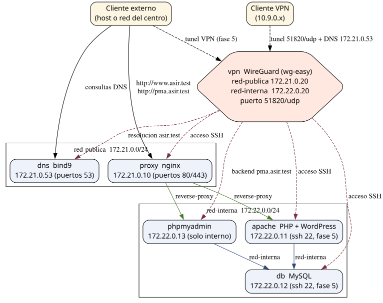

Table of Contents
- 1. Descripción general
- 2. Fase 1 — Servidor LAMP
- 3. Fase 2 — Servidor DNS
- 4. Fase 3 — WordPress instalado en LAMP
- 5. Fase 4 — Proxy inverso
- 6. Fase 5 — Acceso por VPN WireGuard
- 7. Evaluación
- 8. Solución
- 8.1. Estructura definitiva del repositorio
- 8.2. docker-compose.yml
- 8.3. .env.example
- 8.4. apache/Dockerfile
- 8.5. apache/entrypoint.sh
- 8.6. db/Dockerfile
- 8.7. db/entrypoint-ssh.sh
- 8.8. proxy/conf.d/proxy.conf
- 8.9. dns/named.conf
- 8.10. dns/named.conf.options
- 8.11. dns/named.conf.local
- 8.12. dns/zones/db.asir.test
- 8.13. dns/zones/db.172.21
- 8.14. dns/zones/db.172.22
- 8.15. scripts/install.sh
- 8.16. scripts/comprobaciones.sh
- 8.17. Puesta en marcha
- 8.18. Notas sobre wg-easy
1. Descripción general
1.1. Arquitectura final

1.2. Redes Docker
red-publica(bridge) con subred172.21.0.0/24: contiene los servicios expuestos al exterior:dns,proxyyvpn.red-interna(bridge) con subred172.22.0.0/24: contiene los servicios backend:apache,dbyphpmyadmin.proxyyvpntambién se conectan a esta red para alcanzar el backend.- Dentro de una misma red Docker los contenedores se resuelven entre sí por su nombre de servicio (
db,apache…). Los nombres públicos del dominioasir.testlos resuelve el servidor DNS del proyecto.
1.3. Contenedores e IPs
| Contenedor | Imagen | IP red-publica | IP red-interna | Funciones principales |
|---|---|---|---|---|
dns |
bind9 | 172.21.0.53 | — | Autoritativo de asir.test y recursivo para el resto |
proxy |
nginx | 172.21.0.10 | 172.22.0.10 | Proxy inverso a Apache y a PHPMyAdmin |
apache |
php:8.2-apache | — | 172.22.0.11 | Apache + PHP con WordPress, SSH (fase 5) |
db |
mysql:8.4 | — | 172.22.0.12 | MySQL con la base de datos de WordPress, SSH (fase 5) |
phpmyadmin |
phpmyadmin | — | 172.22.0.13 | Gestión web de db, accesible solo por proxy o por VPN |
vpn |
wireguard (wg-easy) | 172.21.0.20 | 172.22.0.20 | Servidor WireGuard con panel web de gestión |
1.4. Puertos expuestos en el host
| Puerto | Servicio | Uso |
|---|---|---|
| 53 (TCP+UDP) | dns |
Consultas DNS de clientes externos y de clientes VPN |
| 80 y 443 | proxy |
WordPress (www.asir.test) y PHPMyAdmin (pma.asir.test) |
| 51820/udp | vpn |
Túnel WireGuard para los clientes VPN |
1.5. Dominio
Se emplea el dominio reservado para pruebas asir.test (RFC 6761). Registros requeridos:
dns.asir.testproxy.asir.testvpn.asir.testapache.asir.testdb.asir.testpma.asir.test,- alias
phpmyadmin.asir.test(CNAME depma) - Alias
www.asir.test(CNAME deproxy).
2. Fase 1 — Servidor LAMP
2.1. Enunciado
- Desplegar un servidor LAMP (Linux + Apache + MySQL + PHP) en tres contenedores:
apache(Apache con PHP),db(MySQL) yphpmyadmin(gestión dedb). - Los tres contenedores deben formar parte de una red Docker propia (
red-interna) y comunicarse entre sí por sus nombres de servicio. - Debe probarse una página PHP que muestre el resultado de una consulta a MySQL.
2.2. Objetivos
- Crear y administrar redes Docker (driver
bridge, subred propia, IPs fijas). - Conocer las variables de entorno de las imágenes MySQL y PHPMyAdmin.
- Conectar un contenedor PHP a la base de datos usando únicamente el nombre
db.
2.3. Tareas
- Crear el fichero
docker-compose.ymlcon los serviciosdb,apacheyphpmyadminy la redred-interna(172.22.0.0/24) con IPs fijas. - Configurar
dbcon: volumen persistente (./db/data), base de datoswordpress, usuariowp_usery contraseñas. - Configurar
apachecon la imagenphp:8.2-apachey montar el volumen./apache/wwwen/var/www/html. - Configurar
phpmyadminapuntando aPMA_HOST=db. - Añadir temporalmente
8080:80(apache) y8081:80(phpmyadmin) para poder probarlos desde el host. Se retirarán en la fase 4. - Crear en
apache/wwwlos ficherosindex.php(bienvenida del LAMP) ytest-db.php(consulta a MySQL conmysqli).
2.4. Comprobaciones
docker compose psmuestra los tres contenedores arriba.- Acceder a
http://localhost:8080/index.phpyhttp://localhost:8080/test-db.php. http://localhost:8081muestra el login de PHPMyAdmin; se entra conroot/asir_rooty la basewordpressdebe existir.- Desde
apachedebe resolverse el nombredb:docker compose exec apache getent hosts db.
curl http://localhost:8080/test-db.php
curl -u root:asir_root http://localhost:8081/
2.5. Entrega
docker-compose.yml,index.phpytest-db.php.- Capturas de la resolución de
dby de las dos páginas web funcionando.
3. Fase 2 — Servidor DNS
3.1. Enunciado
- Desplegar un contenedor
dnscon BIND9 que sea autoritativo para el dominioasir.testy recursivo para el resto de nombres. - Debe almacenar un registro de nombre por cada contenedor del proyecto y los registros de resolución inversa (PTR).
- Los clientes externos deben poder utilizarlo: desde el host se apunta el resolver a
172.21.0.53.
3.2. Objetivos
- Montar BIND9 en un contenedor con ficheros de configuración propios.
- Crear zona directa e inversas con registros A, CNAME y PTR.
- Configurar la recursividad y comprobar con
dig/nslookup.
3.3. Tareas
- Añadir el servicio
dnscon la imageninternetsystemsconsortium/bind9y publicar los puertos53(TCP y UDP). - Crear la red
red-publica(172.21.0.0/24) y asignar adnsla IP fija 172.21.0.53. - Montar en el contenedor
named.conf,named.conf.options,named.conf.localy el directoriozones/. - Definir la zona directa
asir.testcon un A por contenedor (dns,proxy,vpn,apache,db,pma) y los CNAMEphpmyadmin→pmaywww→proxy. - Definir las zonas inversas
21.172.in-addr.arpay22.172.in-addr.arpacon los PTR de todas las IPs del proyecto. - Configurar la recursividad con
forwarders(p. ej. 1.1.1.1 y 8.8.8.8).
3.4. Comprobaciones
- Desde el host, apuntando el resolver a 172.21.0.53:
dig @172.21.0.53 www.asir.test A
dig @172.21.0.53 apache.asir.test A
dig @172.21.0.53 -x 172.22.0.12
dig @172.21.0.53 -x 172.21.0.53
dig @172.21.0.53 google.es A # recursividad hacia el exterior
- Todos los nombres devuelven el registro esperado; las inversas devuelven el nombre correspondiente.
3.5. Entrega
- Configuración de BIND9 y ficheros de zona.
- Salida de
digde al menos 4 nombres directos, 2 inversos y 1 recursivo.
4. Fase 3 — WordPress instalado en LAMP
4.1. Enunciado
- Instalar WordPress sobre el LAMP de la fase 1, de modo que use la base de datos
dby el servidor webapache. - Completar la instalación por web y crear al menos una entrada (página o artículo).
4.2. Objetivos
- Automatizar la descarga de WordPress mediante un script (
scripts/install.sh). - Generar
wp-config.phpcon las credenciales dedby las salts. - Comprobar que una aplicación PHP real persiste sus datos en MySQL.
4.3. Tareas
- En
scripts/install.sh: descargarhttps://wordpress.org/latest.tar.gzy extraerlo enapache/www. No sobrescribir si ya existewp-config.php. - Generar
wp-config.phpconDB_NAME=wordpress,DB_USER=wp_user,DB_PASSWORD=wp_pass_2026,DB_HOST=dby las 8 salts generadas conopenssl rand -base64 48. - Levantar el escenario y completar el asistente web apuntando el navegador a
http://localhost:8080(en esta fase todavía sin proxy). - Crear un artículo de prueba y comprobar que tras
docker compose restart dbel artículo sigue existiendo (persistencia endb/data).
4.4. Comprobaciones
docker compose exec db mysql -u wp_user -pwp_pass_2026 wordpress -e "show tables;"
muestra las tablas de WordPress.
/wp-admin/permite iniciar sesión con el usuario creado en el asistente.
4.5. Entrega
- Fragmento relevante de
install.sh,wp-config.phpy captura del sitio ya instalado.
5. Fase 4 — Proxy inverso
5.1. Enunciado
- Colocar un contenedor
proxy(nginx) como puerta de entrada única al servidor Apache y al servidor PHPMyAdmin. - El proxy usará dos nombres virtuales:
www.asir.test→apache:80ypma.asir.test→phpmyadmin:80. - A partir de esta fase los clientes acceden únicamente a través del proxy; se
retiran las publicaciones
8080y8081.
5.2. Objetivos
- Comprender el patrón de proxy inverso y la directiva
proxy_pass. - Aplicar enrutamiento por
server_name. - Ocultar los servidores backend de la red exterior.
5.3. Tareas
- Añadir el servicio
proxy(imagennginx:1.27-alpine) ared-publica(172.21.0.10) y ared-interna(172.22.0.10). - Montar
./proxy/conf.d/proxy.confen/etc/nginx/conf.d. - Publicar solo los puertos
80y443deproxyen el host. - Retirar las publicaciones
8080y8081deapacheyphpmyadmin. - Definir los dos bloques
server{}:parawww.asir.testypma.asir.testconproxy_pass http://apache:80yproxy_pass http://phpmyadmin:80respectivamente, propagandoHostyX-Forwarded-For. - Comprobar desde el host añadiendo una entrada estática al DNS del sistema (o usando
--resolveconcurl) y después mediante el DNS de la fase 2.
5.4. Comprobaciones
curl -s -o /dev/null -w "%{http_code}\n" -H "Host: www.asir.test" http://127.0.0.1/
curl -s -o /dev/null -w "%{http_code}\n" -H "Host: pma.asir.test" http://127.0.0.1/
- Abriendo
http://www.asir.testyhttp://pma.asir.testen el navegador (con DNS del sistema apuntando a 172.21.0.53) se ven WordPress y PHPMyAdmin.
5.5. Entrega
proxy.confcompleto y capturas de ambos sitios funcionando a través del proxy.
6. Fase 5 — Acceso por VPN WireGuard
6.1. Enunciado
- Desplegar un servidor VPN WireGuard (
vpn). - Los clientes conectados a la VPN deben:
- usar el servidor DNS del proyecto (172.21.0.53) para resolver
asir.test; - acceder al backend PHPMyAdmin (
pma.asir.test) directamente, sin pasar por el proxy; - conectarse por SSH a los contenedores
apacheydb.
- usar el servidor DNS del proyecto (172.21.0.53) para resolver
6.2. Objetivos
- Instalar y administrar WireGuard con wg-easy (panel web para clientes).
- Encaminar el tráfico de la VPN hacia las subredes de Docker.
- Publicar servicios del backend de forma segura a través del túnel.
6.3. Tareas
- Añadir el servicio
vpncon la imagenweejewel/wg-easy,cap_add NET_ADMIN,net.ipv4.ip_forwardynet.ipv4.conf.all.src_valid_mark=1. - Publicar
51820/udp(túnel) y51821/tcp(panel web de gestión).- El puerto
51821se publica temporalmente, pero tras comprobar el correcto funcionamiento solo será accesible a través de la VPN
- El puerto
- Conectar
vpnared-publica(172.21.0.20) y ared-interna(172.22.0.20) para alcanzar el backend. - Configurar las variables del entorno:
WG_HOST(IP del host o del servidor),PASSWORD,WG_DEFAULT_DNS=172.21.0.53yWG_ALLOWED_IPScon las subredes públicas, interna y la del túnel (172.21.0.0/24, 172.22.0.0/24 y 10.9.0.0/24). - Instalar
openssh-serverenapacheydb(permitiendo login de root con contraseña) e iniciarlo junto con el servicio principal. - Crear un cliente VPN desde el panel
http://IP_HOST:51821y descargar su configuración.
6.4. Comprobaciones (desde el cliente VPN conectado)
ip addr show wg0 # IP 10.9.0.x asignada
ping -c 3 172.22.0.12 # alcanza MySQL por la VPN
dig apache.asir.test @172.21.0.53 # usa el DNS del proyecto
curl http://pma.asir.test/ # backend PHPMyAdmin por la VPN
ssh root@apache.asir.test # shell en el contenedor apache
ssh root@db.asir.test # shell en el contenedor db
- En el host se comprueba que el puerto 8081 (PHPMyAdmin) NO está publicado:
solo se alcanza dentro de la VPN o a través de
pma.asir.test(proxy).
6.5. Entrega
- Configuración del servicio
vpny capturas del cliente VPN con todos los apartados anteriores funcionando.
7. Evaluación
| Criterio | Peso |
|---|---|
| Fase 1: LAMP operativo y explicación de sus componentes | 15% |
| Fase 2: resolución directa e inversa de todos los contenedores | 20% |
| Fase 3: WordPress instalado y con persistencia en MySQL | 15% |
| Fase 4: proxy inverso con doble nombre virtual y backend oculto | 20% |
| Fase 5: cliente VPN con DNS + accesso al backend y SSH a apache/db | 20% |
Despliegue automático con un solo docker compose y los scripts |
10% |
8. Solución
8.1. Estructura definitiva del repositorio
proyecto-asir/
├── docker-compose.yml
├── .env.example
├── apache/
│ ├── Dockerfile
│ ├── entrypoint.sh
│ └── www/ # WordPress (lo descarga scripts/install.sh)
├── db/
│ ├── Dockerfile
│ ├── entrypoint-ssh.sh
│ └── data/
├── proxy/
│ └── conf.d/proxy.conf
├── dns/
│ ├── named.conf
│ ├── named.conf.options
│ ├── named.conf.local
│ └── zones/
│ ├── db.asir.test
│ ├── db.172.21
│ └── db.172.22
└── scripts/
├── install.sh
└── comprobaciones.sh
8.2. docker-compose.yml
name: proyecto-asir
services:
proxy:
image: nginx:1.27-alpine
container_name: proxy
restart: unless-stopped
ports:
- "80:80"
- "443:443"
volumes:
- ./proxy/conf.d:/etc/nginx/conf.d:ro
depends_on:
- apache
- phpmyadmin
networks:
red-publica:
ipv4_address: 172.21.0.10
red-interna:
ipv4_address: 172.22.0.10
apache:
build: ./apache
container_name: apache
restart: unless-stopped
volumes:
- ./apache/www:/var/www/html
depends_on:
- db
networks:
red-interna:
ipv4_address: 172.22.0.11
db:
build: ./db
container_name: db
restart: unless-stopped
environment:
MYSQL_ROOT_PASSWORD: asir_root
MYSQL_DATABASE: wordpress
MYSQL_USER: wp_user
MYSQL_PASSWORD: wp_pass_2026
volumes:
- ./db/data:/var/lib/mysql
networks:
red-interna:
ipv4_address: 172.22.0.12
phpmyadmin:
image: phpmyadmin:5.2
container_name: phpmyadmin
restart: unless-stopped
environment:
PMA_HOST: db
PMA_PORT: 3306
PMA_USER: root
PMA_PASSWORD: asir_root
PMA_ABSOLUTE_URI: "http://pma.asir.test"
depends_on:
- db
networks:
red-interna:
ipv4_address: 172.22.0.13
dns:
image: internetsystemsconsortium/bind9:9.19
container_name: dns
restart: unless-stopped
ports:
- "53:53/udp"
- "53:53/tcp"
volumes:
- ./dns/named.conf:/etc/bind/named.conf:ro
- ./dns/named.conf.options:/etc/bind/named.conf.options:ro
- ./dns/named.conf.local:/etc/bind/named.conf.local:ro
- ./dns/zones:/etc/bind/zones:ro
networks:
red-publica:
ipv4_address: 172.21.0.53
vpn:
image: weejewel/wg-easy
container_name: vpn
restart: unless-stopped
cap_add:
- NET_ADMIN
- SYS_MODULE
sysctls:
- net.ipv4.conf.all.src_valid_mark=1
- net.ipv4.ip_forward=1
ports:
- "51820:51820/udp"
- "51821:51821/tcp"
environment:
WG_HOST: "${WG_HOST:-127.0.0.1}"
PASSWORD: "${WG_PASSWORD:-asir-vpn-2026}"
WG_DEFAULT_ADDRESS: "10.9.0.x"
WG_DEFAULT_DNS: "172.21.0.53"
WG_ALLOWED_IPS: "172.21.0.0/24, 172.22.0.0/24, 10.9.0.0/24"
WG_PERSISTENT_KEEPALIVE: "25"
networks:
red-publica:
ipv4_address: 172.21.0.20
red-interna:
ipv4_address: 172.22.0.20
networks:
red-publica:
driver: bridge
ipam:
config:
- subnet: 172.21.0.0/24
red-interna:
driver: bridge
ipam:
config:
- subnet: 172.22.0.0/24
8.3. .env.example
# IP/dominio que usan los clientes VPN para conectarse (IP del host o publica)
WG_HOST=192.168.1.10
# Contrasena del panel web de WireGuard (http://IP_HOST:51821)
WG_PASSWORD=asir-vpn-2026
8.4. apache/Dockerfile
FROM php:8.2-apache
RUN apt-get update \
&& apt-get install -y --no-install-recommends vim openssh-server \
&& docker-php-ext-install mysqli pdo_mysql \
&& a2enmod rewrite \
&& sed -i 's/^#PermitRootLogin.*/PermitRootLogin yes/' /etc/ssh/sshd_config \
&& mkdir -p /run/sshd \
&& echo 'root:asir' | chpasswd
COPY entrypoint.sh /usr/local/bin/entrypoint.sh
RUN chmod +x /usr/local/bin/entrypoint.sh
EXPOSE 80 22
ENTRYPOINT ["/usr/local/bin/entrypoint.sh"]
8.5. apache/entrypoint.sh
#!/bin/bash
/usr/sbin/sshd
exec apache2-foreground
8.6. db/Dockerfile
FROM mysql:8.4
RUN apt-get update \
&& apt-get install -y --no-install-recommends openssh-server vim \
&& sed -i 's/^#PermitRootLogin.*/PermitRootLogin yes/' /etc/ssh/sshd_config \
&& mkdir -p /run/sshd \
&& echo 'root:asir' | chpasswd
COPY entrypoint-ssh.sh /usr/local/bin/entrypoint-ssh.sh
RUN chmod +x /usr/local/bin/entrypoint-ssh.sh
EXPOSE 3306 22
ENTRYPOINT ["/usr/local/bin/entrypoint-ssh.sh"]
CMD ["mysqld"]
8.7. db/entrypoint-ssh.sh
#!/bin/bash
/usr/sbin/sshd
exec docker-entrypoint.sh "$@"
8.8. proxy/conf.d/proxy.conf
# WordPress a traves del proxy
server {
listen 80;
server_name www.asir.test;
location / {
proxy_pass http://apache:80;
proxy_set_header Host $host;
proxy_set_header X-Real-IP $remote_addr;
proxy_set_header X-Forwarded-For $proxy_add_x_forwarded_for;
}
}
# PHPMyAdmin a traves del proxy
server {
listen 80;
server_name pma.asir.test phpmyadmin.asir.test;
location / {
proxy_pass http://phpmyadmin:80;
proxy_set_header Host $host;
proxy_set_header X-Real-IP $remote_addr;
proxy_set_header X-Forwarded-For $proxy_add_x_forwarded_for;
}
}
8.9. dns/named.conf
include "/etc/bind/named.conf.options";
include "/etc/bind/named.conf.local";
8.10. dns/named.conf.options
options {
directory "/var/cache/bind";
recursion yes;
allow-query { any; };
listen-on port 53 { any; };
listen-on-v6 { any; };
forwarders { 1.1.1.1; 8.8.8.8; };
dnssec-validation no;
};
8.11. dns/named.conf.local
// Zona directa del proyecto
zone "asir.test" {
type master;
file "/etc/bind/zones/db.asir.test";
};
// Zonas inversas de las dos redes Docker
zone "21.172.in-addr.arpa" {
type master;
file "/etc/bind/zones/db.172.21";
};
zone "22.172.in-addr.arpa" {
type master;
file "/etc/bind/zones/db.172.22";
};
8.12. dns/zones/db.asir.test
$TTL 86400
@ IN SOA dns.asir.test. admin.asir.test. (
2026091401 ; serial
3600 ; refresh
1800 ; retry
604800 ; expire
86400 ) ; minimum
IN NS dns.asir.test.
; Servidores
dns IN A 172.21.0.53
proxy IN A 172.21.0.10
vpn IN A 172.21.0.20
; Backend (solo red-interna / VPN)
apache IN A 172.22.0.11
db IN A 172.22.0.12
pma IN A 172.22.0.13
; Alias
phpmyadmin IN CNAME pma
www IN CNAME proxy
8.13. dns/zones/db.172.21
$TTL 86400
@ IN SOA dns.asir.test. admin.asir.test. (
2026091401 ; serial
3600 ; refresh
1800 ; retry
604800 ; expire
86400 ) ; minimum
IN NS dns.asir.test.
10 IN PTR proxy.asir.test.
20 IN PTR vpn.asir.test.
53 IN PTR dns.asir.test.
8.14. dns/zones/db.172.22
$TTL 86400
@ IN SOA dns.asir.test. admin.asir.test. (
2026091401 ; serial
3600 ; refresh
1800 ; retry
604800 ; expire
86400 ) ; minimum
IN NS dns.asir.test.
10 IN PTR proxy.asir.test.
11 IN PTR apache.asir.test.
12 IN PTR db.asir.test.
13 IN PTR pma.asir.test.
8.15. scripts/install.sh
#!/bin/bash
# Preparacion automatica del proyecto ASIR.
# Uso: ./scripts/install.sh
set -euo pipefail
cd "$(dirname "$0")/.."
echo "[1/3] Creando directorios de datos"
mkdir -p apache/www db/data
echo "[2/3] Desplegando WordPress (fases 1 y 3)"
if [ ! -f "apache/www/wp-config.php" ]; then
curl -fsSL https://wordpress.org/latest.tar.gz -o /tmp/wordpress.tar.gz
tar -xzf /tmp/wordpress.tar.gz -C apache/www --strip-components=1
SALTS=""
for i in AUTH_KEY SECURE_AUTH_KEY LOGGED_IN_KEY NONCE_KEY \
AUTH_SALT SECURE_AUTH_SALT LOGGED_IN_SALT NONCE_SALT; do
SALTS+=$(printf "define('%s', '%s');\n" "$i" "$(openssl rand -base64 48)")
done
cat > apache/www/wp-config.php <<EOF
<?php
define('DB_NAME', 'wordpress');
define('DB_USER', 'wp_user');
define('DB_PASSWORD', 'wp_pass_2026');
define('DB_HOST', 'db');
define('DB_CHARSET', 'utf8mb4');
define('DB_COLLATE', '');
$SALTS
\$table_prefix = 'wp_';
define('WP_DEBUG', false);
// Acceso final a traves del proxy inverso
define('WP_HOME', 'http://www.asir.test');
define('WP_SITEURL', 'http://www.asir.test');
if ( ! defined( 'ABSPATH' ) ) {
define( 'ABSPATH', __DIR__ . '/' );
}
require_once ABSPATH . 'wp-settings.php';
EOF
echo " - wp-config.php generado"
fi
echo "[3/3] Configurando WireGuard (fase 5)"
if [ ! -f .env ]; then
HOST_IP=$(hostname -I | awk '{print $1}')
cat > .env <<EOF
WG_HOST=${HOST_IP}
WG_PASSWORD=asir-vpn-2026
EOF
echo " - .env generado (WG_HOST=${HOST_IP})"
fi
echo "Listo. Ejecuta: docker compose up -d --build"
8.16. scripts/comprobaciones.sh
#!/bin/bash
# Verificacion del despliegue completo. set -euo pipefail cd
"$(dirname "$0")/.."
DNS_IP=172.21.0.53
echo "=== 1. Contenedores ===" docker compose ps --format "table
{{.Name}}\t{{.Status}}\t{{.Ports}}"
echo "=== 2. Resolucion directa asir.test ===" for n in dns proxy www
vpn apache db pma phpmyadmin; do r=$(dig +short "@${DNS_IP}"
"${n}.asir.test" A | head -n1) echo " ${n}.asir.test -> ${r:-SIN
RESPUESTA}" done
echo "=== 3. Resolucion inversa ===" for ip in 172.21.0.53 172.21.0.10
172.21.0.20 \ 172.22.0.11 172.22.0.12 172.22.0.13; do echo " ${ip} ->
$(dig +short -x "${ip}" "@${DNS_IP}")" done
echo "=== 4. Proxy inverso ===" curl -s -o /dev/null -w "
www.asir.test -> HTTP %{http_code}\n" \ -H "Host: www.asir.test"
http://127.0.0.1/ curl -s -o /dev/null -w " pma.asir.test -> HTTP
%{http_code}\n" \ -H "Host: pma.asir.test" http://127.0.0.1/
echo "=== 5. SSH en backend (fase 5) ===" docker compose exec apache
bash -c 'pgrep sshd >/dev/null && echo " sshd OK en apache"' docker
compose exec db bash -c 'pgrep sshd >/dev/null && echo " sshd OK en
db"'
echo "=== 6. Log de WireGuard ===" docker compose logs vpn 2>/dev/null
| tail -n 3
8.17. Puesta en marcha
chmod +x scripts/*.sh ./scripts/install.sh # descarga WordPress,
genera wp-config y .env docker compose up -d --build
- Acceder a
http://www.asir.test(WordPress) yhttp://pma.asir.test(PHPMyAdmin) con el DNS del sistema apuntando a 172.21.0.53. - Crear un cliente VPN en
http://IP_DEL_HOST:51821y descargar el fichero*.conf. Importarlo en el cliente WireGuard, conectarse y repetir la lista de comprobaciones de la fase 5.
8.18. Notas sobre wg-easy
WG_HOSTdebe ser la IP o dominio que el cliente VPN usa para conectarse: en prácticas de aula basta la IP del host (se detecta eninstall.sh); con clientes externos hay que usar la IP pública o un dominio con registro A.- Si se prefiere autenticar con hash en lugar de
PASSWORD, se genera condocker run --rm weejewel/wg-easy wgpw 'asir-vpn-2026'y se asigna la variablePASSWORD_HASHen el serviciovpn. - wg-easy asigna IPs automáticas dentro de
10.9.0.0/24a cada cliente creado desde el panel.